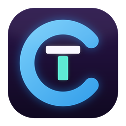

choboterm
ZTerm처럼 간결한 Windows용 SSH · Telnet · FTP 터미널
⬇ 다운로드 (Windows)기능
- SSH · Telnet · FTP22/23/21번 포트는 바로, 다른 포트는 서버 응답으로 자동 판별 (예: Termux 8022)
- 탭여러 접속을 탭으로. 탭마다 인코딩·파일 전송이 따로 동작
- EUC-KR (CP949)옛 BBS 한글과 ─│■ 특수문자 2칸 폭까지
- SFTP · SCPSSH 접속 그대로 파일 전송, SFTP가 없으면 SCP로 자동 전환
- Zmodem터미널에서 sz / rz만 입력하면 파일 송수신
- 안전한 저장known_hosts 확인, Telnet 비밀번호는 Windows DPAPI로 암호화
- 포트 포워딩SSH 로컬(-L) · 원격(-R) · 동적(-D, SOCKS5). 호스트별로 저장해 다음 접속 때 자동 적용
- 연결 유지 · 자동 재접속쉬는 연결이 끊기지 않게 keepalive, 네트워크가 끊기면 화면을 그대로 두고 다시 연결
- 매크로자주 쓰는 명령을 저장해 두고 창이나 F키로 바로 보내기
- 세션 로그받은 출력을 파일에 계속 저장 (접속할 때 자동 시작, 일반 텍스트 또는 원본)
- 편한 파일 창여러 개 선택, 폴더째 받기·올리기, 탐색기에서 끌어 놓기, 삭제 · 이름 바꾸기 · 새 폴더
- 복사 · 붙여넣기선택하면 복사, 우클릭으로 붙여넣기. 여러 줄은 실행 전에 확인
- 검색 · 글꼴 · 링크스크롤백 검색, Ctrl+휠 글꼴 크기, Ctrl+클릭으로 URL 열기, 창 위치 기억
단축키
| Ctrl+Shift+T | 새 탭으로 접속 |
| Ctrl+Tab / Ctrl+Shift+Tab | 다음 / 이전 탭 |
| Ctrl+Shift+W | 탭 닫기 |
| Ctrl+Shift+F | 파일 전송 창 (SFTP / SCP / FTP) |
| Ctrl+Shift+E | UTF-8 ↔ EUC-KR |
| Ctrl+Shift+D | 연결 끊기 |
| Ctrl+Shift+C / Ctrl+Shift+V | 복사 / 붙여넣기 (마우스 선택 = 복사, 우클릭 = 붙여넣기) |
| Ctrl+Shift+S | 스크롤백 검색 |
| Ctrl+휠 / Ctrl+= / Ctrl+- | 글꼴 크게 / 작게 |
| Ctrl+Shift+M | 매크로 |
| Ctrl+Shift+P | SSH 포트 포워딩 |
| Ctrl+Shift+L | 세션 로그 기록 시작 / 중지 |
| Ctrl+Shift+O | 설정 (연결 유지 간격, 자동 재접속 등) |
| F1 | 도움말 (한국어 / English) |
설치
설치 과정 없이 choboterm.exe를 내려받아 실행하면 됩니다. Windows 10 / 11 (WebView2 런타임, Windows 11에는 기본 포함)에서 동작합니다.
코드 서명이 없는 실행 파일이라 처음 실행할 때 "Windows의 PC 보호" 창이 뜰 수 있습니다. 추가 정보 → 실행을 누르면 됩니다.